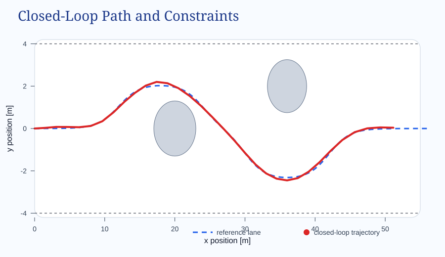
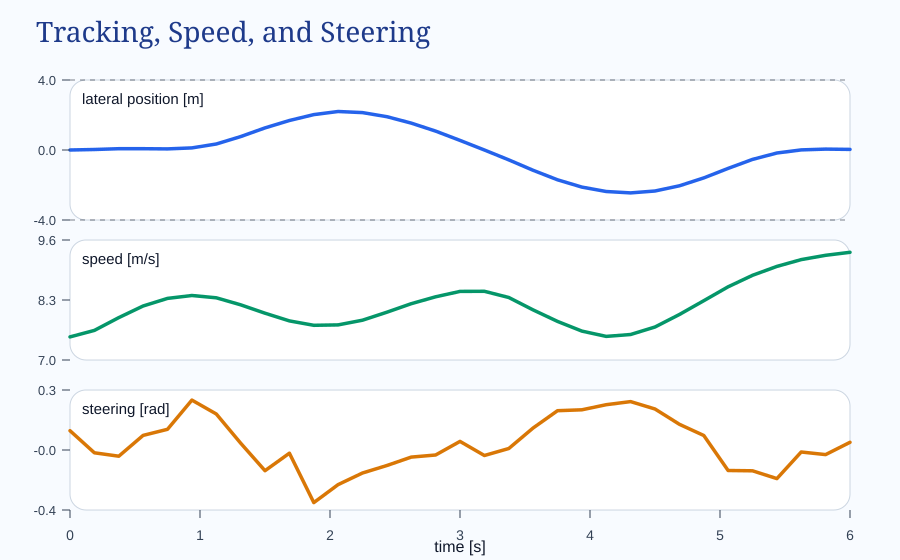

Constrained Nonlinear MPC with CasADi
A pedagogical walkthrough of model predictive control with road, actuator, and obstacle constraints.
Why This Example Matters
Model predictive control is attractive because it turns “what should I do next?” into an optimization problem with a preview of the future. That preview is exactly what makes MPC useful when you care about competing objectives and hard limits at the same time.
This example is deliberately more realistic than the textbook one-state regulator. The controller steers a kinematic bicycle model along a curved lane, adapts speed to the road ahead, stays within road boundaries, and avoids two obstacles. CasADi and IPOPT solve the nonlinear program at every sample instant.
The Problem
The state is x = [p_x, p_y, \psi, v] and the input is u = [a, \delta]. The controller must:
- Stay inside the road corridor.
- Respect speed, acceleration, and steering bounds.
- Limit acceleration and steering changes.
- Avoid elliptical obstacle regions.
- Track a curved lane center and a varying speed reference.
This is where MPC is useful: the correct action depends on what will happen several steps into the future, not only on the current error.
MPC in Plain Language
- Predict the future system evolution over a horizon of
Nsteps. - Optimize the full control sequence against a cost function.
- Reject sequences that violate bounds or obstacle constraints.
- Apply only the first control move.
- Measure again and repeat.
This repeated solve-and-shift loop is the receding-horizon principle.
The Scenario Geometry
The path reference uses two smooth lateral shifts built from hyperbolic tangent functions, and the speed reference slows down near the obstacle-rich regions. That makes the optimization nontrivial while keeping the structure readable.
def reference_lane(x):
term_1 = 2.1 * 0.5 * (np.tanh((x - 12.0) / 3.0) - np.tanh((x - 24.0) / 3.0))
term_2 = 2.4 * 0.5 * (np.tanh((x - 30.0) / 3.0) - np.tanh((x - 42.0) / 3.0))
return term_1 - term_2
def reference_speed(x):
slowdown_1 = 2.3 * np.exp(-((x - 17.0) / 5.5) ** 2)
slowdown_2 = 2.8 * np.exp(-((x - 35.0) / 5.0) ** 2)
return 9.0 - slowdown_1 - slowdown_2
The trajectory bends around the obstacle ellipses while staying inside the road corridor. That visible path is the optimization result.
The Prediction Model
The controller uses a kinematic bicycle model:
p_x_dot = v * cos(psi)
p_y_dot = v * sin(psi)
psi_dot = v * tan(delta) / L
v_dot = aIn code, the continuous dynamics are integrated with RK4 rather than a crude Euler step:
def _rk4_step(self, x, u):
dt = self.cfg.dt
k1 = self._dynamics(x, u)
k2 = self._dynamics(x + 0.5 * dt * k1, u)
k3 = self._dynamics(x + 0.5 * dt * k2, u)
k4 = self._dynamics(x + dt * k3, u)
return x + (dt / 6.0) * (k1 + 2 * k2 + 2 * k3 + k4)The Optimization Problem
Over the horizon, the objective penalizes lateral error, heading error, speed error, control effort, control-rate changes, and slack variables. The core of the cost is:
tracking_error = ca.vertcat(
xk[0],
xk[1] - y_ref,
xk[2] - psi_ref,
xk[3] - v_ref,
)
obj += (
w_y * tracking_error[1] ** 2
+ w_psi * tracking_error[2] ** 2
+ w_v * tracking_error[3] ** 2
+ ca.mtimes([uk.T, w_u, uk])
- progress_reward * xk[3]
)
du = uk - (u_prev if k == 0 else U[:, k - 1])
obj += ca.mtimes([du.T, w_du, du])That du term is where smooth behavior comes from. Without it, the optimizer would choose much sharper changes in acceleration and steering.
Obstacle avoidance enters through ellipse inequalities. The normalized squared distance must stay above 1, with slack only for robustness:
normalized_distance = ((xk[0] - obstacle.x) / obstacle.rx) ** 2 + \
((xk[1] - obstacle.y) / obstacle.ry) ** 2
g.append(normalized_distance + S[obs_index, k])
lbg.append(1.0)
ubg.append(ca.inf)The Receding-Horizon Loop
for step in range(cfg.steps):
solution, predicted_controls, predicted_states, cost = controller.solve(x, u_prev, guess)
u = predicted_controls[:, 0]
x = controller.rollout(x, u)
states.append(x.copy())
controls.append(u.copy())
costs.append(cost)
u_prev = u
guess = controller.shift_guess(solution)This is the conceptual center of MPC: optimize a whole plan, apply the first move, then re-solve from the new measured state.
Reading the Results

- The lateral position follows the lane shifts without touching the road boundaries.
- The speed adapts to the varying reference instead of staying constant.
- The steering profile stays bounded and smooth enough to remain realistic.
From the verified run used for this page:
- Final longitudinal position: about
51.15 m - Maximum lateral excursion: about
2.45 m - Maximum speed: about
9.33 m/s - Maximum steering magnitude: about
0.319 rad - Minimum obstacle margin: about
0.89
Run the Code
The full working source and the closed-loop data used on this page are bundled with the article:
conda activate control
cd /Users/kirar2004/Documents/Coding/Python/casadi_mpc_constraints
python mpc_bicycle_constraints.py